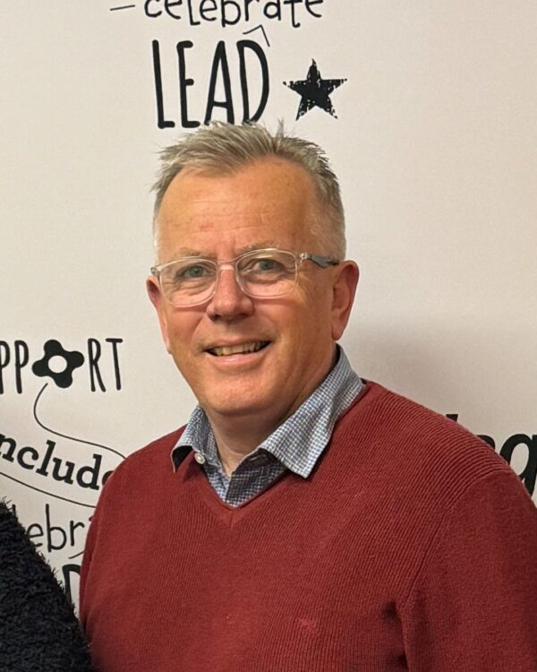

Podcasts let us explore different topics and learn from listing.
Meet our host Chris from Flagstaff’s We Belong community who explores the life stories of people with disability, their interactions, barriers, or challenges they have faced in joining groups or activities.
